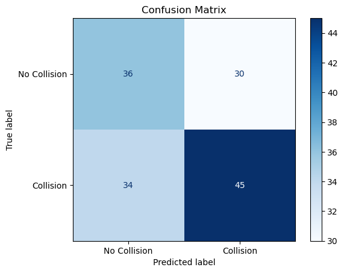

# Import libraries
import os
import pandas as pd
import numpy as np
import matplotlib.pyplot as plt
import torch
import torch.nn as nn
from torch.nn.utils.rnn import pad_sequence
from torch.utils.data import Dataset, DataLoader
from sklearn.metrics import confusion_matrix, ConfusionMatrixDisplay, precision_score, recall_score, f1_score
import matplotlib.pyplot as plt
from sklearn.preprocessing import StandardScaler
from sklearn.model_selection import train_test_split
from tqdm import tqdmExtract Feature from Each Frame
feature_scaler = StandardScaler()
# extract features from the CSV file
def extract_frame_features(frame_df, scaler=None):
num_objects = len(frame_df)
avg_conf = frame_df["confidence"].mean()
avg_box_area = ((frame_df["x_max"] - frame_df["x_min"]) *
(frame_df["y_max"] - frame_df["y_min"])).mean()
desired_size = 13
class_counts = np.zeros(desired_size)
for cls in frame_df["object_class"]:
cls = int(cls)
if cls < desired_size:
class_counts[cls] += 1
raw_features = [num_objects, avg_conf, avg_box_area] + class_counts.tolist()
if scaler:
raw_features = scaler.transform([raw_features])[0] # normalize
return torch.tensor(raw_features, dtype=torch.float32)
# Process the CSV file and extract features for each frame
def process_video_csv(csv_path, scaler = None):
df = pd.read_csv(csv_path)
sequences = []
if "frame" not in df.columns or df.empty:
return torch.empty(0, 16) # return empty tensor with correct shape
for _, frame_df in df.groupby("frame"):
frame_feat = extract_frame_features(frame_df, scaler = scaler)
sequences.append(frame_feat)
if not sequences:
return torch.empty(0, 16)
return torch.stack(sequences)
Load Data Labels
import csv
# Load label CSV into a dictionary
label_dict = {}
with open("../../data/train_labels.csv", newline = "") as f:
reader = csv.DictReader(f)
for row in reader:
label_dict[row["id"]] = int(row["target"])
# Gather all video directories
video_dirs = sorted([
os.path.join("../../data/yolo_processed_data", d)
for d in os.listdir("../../data/yolo_processed_data")
if os.path.isdir(os.path.join("../../data/yolo_processed_data", d))
])Split Data into Training, Validation, and Test Sets
# Filter out videos with >75% empty frames
def filter_videos_by_frame_coverage(video_dirs, empty_threshold=0.75):
filtered = []
for video_dir in video_dirs:
csv_path = os.path.join(video_dir, "detections.csv")
df = pd.read_csv(csv_path)
# Count total frames via image files
jpgs = [f for f in os.listdir(video_dir) if f.lower().endswith(".jpg")]
total_frames = len(jpgs)
detected_frames = df["frame"].nunique()
empty_ratio = (total_frames - detected_frames) / total_frames if total_frames > 0 else 1.0
if empty_ratio <= empty_threshold:
filtered.append(video_dir)
return filtered
video_dirs = filter_videos_by_frame_coverage(video_dirs, empty_threshold=0.75)
# Split video IDs
video_ids = [os.path.basename(v).replace("video_", "") for v in video_dirs]
from sklearn.model_selection import train_test_split
train_ids, temp_ids = train_test_split(video_ids, test_size=0.2, random_state=42)
val_ids, test_ids = train_test_split(temp_ids, test_size=0.5, random_state=42)
def get_dirs(ids):
return [os.path.join("../../data/yolo_processed_data", "video_" + vid) for vid in ids]
train_videos = get_dirs(train_ids)
val_videos = get_dirs(val_ids)
test_videos = get_dirs(test_ids)
# Feature scaler
feature_scaler = StandardScaler()
all_train_feats = []
for video_dir in train_videos:
df = pd.read_csv(os.path.join(video_dir, "detections.csv"))
for _, frame_df in df.groupby("frame"):
# extract raw features (no scaler)
num_objects = len(frame_df)
avg_conf = frame_df["confidence"].mean()
avg_box_area = ((frame_df["x_max"]-frame_df["x_min"])*(frame_df["y_max"]-frame_df["y_min"])).mean()
counts = np.zeros(13)
for cls in frame_df["object_class"]:
c = int(cls)
if c < 13: counts[c] +=1
feat = [num_objects, avg_conf, avg_box_area] + counts.tolist()
all_train_feats.append(feat)
feature_scaler.fit(all_train_feats)StandardScaler()In a Jupyter environment, please rerun this cell to show the HTML representation or trust the notebook.
On GitHub, the HTML representation is unable to render, please try loading this page with nbviewer.org.
StandardScaler()
Create Dataset and DataLoader
# Video Dataset class
class VideoDataset(Dataset):
def __init__(self, video_dirs, label_dict, scaler=None):
self.video_dirs = video_dirs
self.label_dict = label_dict
self.scaler = scaler
def __len__(self): return len(self.video_dirs)
def __getitem__(self, idx):
video_dir = self.video_dirs[idx]
vid = os.path.basename(video_dir).replace("video_", "").zfill(5)
label = self.label_dict.get(vid, 0)
df = pd.read_csv(os.path.join(video_dir, "detections.csv"))
seq = []
for _, frame_df in df.groupby("frame"):
# raw features
num_objects = len(frame_df)
avg_conf = frame_df["confidence"].mean()
avg_box_area = ((frame_df["x_max"]-frame_df["x_min"])*(frame_df["y_max"]-frame_df["y_min"])).mean()
counts = np.zeros(13)
for cls in frame_df["object_class"]:
c = int(cls)
if c < 13: counts[c] +=1
feat = [num_objects, avg_conf, avg_box_area] + counts.tolist()
if self.scaler:
feat = self.scaler.transform([feat])[0]
seq.append(torch.tensor(feat, dtype=torch.float32))
if not seq:
return torch.empty(0,16), torch.tensor(label, dtype=torch.float32)
return torch.stack(seq), torch.tensor(label, dtype=torch.float32)
# Collate fn
def collate_fn(batch):
batch = [(x,y) for x,y in batch if x.size(0)>0]
if not batch: return None
batch.sort(key=lambda x: x[0].size(0), reverse=True)
seqs, labels = zip(*batch)
lengths = torch.tensor([s.size(0) for s in seqs])
padded = pad_sequence(seqs, batch_first=True)
return padded, lengths, torch.stack(labels)
# DataLoaders
train_loader = DataLoader(VideoDataset(train_videos, label_dict, feature_scaler), batch_size=4, shuffle=True, collate_fn=collate_fn)
val_loader = DataLoader(VideoDataset(val_videos, label_dict, feature_scaler), batch_size=4, shuffle=False, collate_fn=collate_fn)
test_loader = DataLoader(VideoDataset(test_videos, label_dict, feature_scaler), batch_size=4, shuffle=False, collate_fn=collate_fn)Define the GRU Model
# Define the GRU model for classification
class GRUClassifier(nn.Module):
def __init__(self, input_dim, hidden_dim, dropout, num_layers):
super().__init__()
self.gru = nn.GRU(input_dim, hidden_dim, num_layers=num_layers, dropout=dropout, batch_first = True, bidirectional = True)
self.fc = nn.Linear(hidden_dim, 1)
self.sigmoid = nn.Sigmoid()
def forward(self, x, lengths):
packed = nn.utils.rnn.pack_padded_sequence(x, lengths.cpu(), batch_first=True, enforce_sorted=False)
_, hn = self.gru(packed)
out = self.fc(hn[-1]) # Get last hidden state
return self.sigmoid(out).squeeze()
Training Model
def train_model(model, train_loader, val_loader, criterion, optimizer, patience, device, epochs, print_epochs=False):
model.to(device)
train_losses, val_losses = [], []
best_val_loss = float("inf")
patience_counter = 0
scheduler = torch.optim.lr_scheduler.ReduceLROnPlateau(optimizer, mode='min', patience=3, factor=0.5, verbose=False)
for epoch in range(epochs):
model.train()
train_loss = 0
for batch in train_loader:
if batch is None:
continue
x_batch, lengths, y_batch = batch
x_batch, lengths, y_batch = x_batch.to(device), lengths.to(device), y_batch.to(device)
optimizer.zero_grad()
outputs = model(x_batch, lengths)
loss = criterion(outputs, y_batch)
loss.backward()
optimizer.step()
train_loss += loss.item()
avg_train_loss = train_loss / len(train_loader)
train_losses.append(avg_train_loss)
# Validation
model.eval()
val_loss = 0
all_preds, all_targets = [], []
with torch.no_grad():
for batch in val_loader:
if batch is None:
continue
x_batch, lengths, y_batch = batch
x_batch, lengths, y_batch = x_batch.to(device), lengths.to(device), y_batch.to(device)
outputs = model(x_batch, lengths)
loss = criterion(outputs, y_batch)
val_loss += loss.item()
all_preds.extend(outputs.cpu().numpy())
all_targets.extend(y_batch.cpu().numpy())
avg_val_loss = val_loss / len(val_loader)
val_losses.append(avg_val_loss)
# Scheduler step
scheduler.step(avg_val_loss)
# Print info
if print_epochs:
print(f"Epoch {epoch + 1}, Train Loss: {avg_train_loss:.4f}, Val Loss: {avg_val_loss:.4f}")
# Save best model
if avg_val_loss < best_val_loss:
best_val_loss = avg_val_loss
patience_counter = 0
else:
patience_counter += 1
if patience_counter >= patience:
if print_epochs:
print("Early stopping triggered")
break
return train_losses, val_losses# Function to iterate through different combinations of hyperparameters for GRU
def tune_gru_hyperparameters(train_loader, val_loader, params, input_size, epochs=50, patience=10):
device = torch.device("cuda" if torch.cuda.is_available() else "cpu")
best_val_loss = float("inf")
best_params = None
all_results = []
best_train_losses = []
best_val_losses = []
for hidden_size in params["hidden_size"]:
for dropout in params["dropout"]:
for learning_rate in params["learning_rate"]:
for num_layers in params["num_layers"]:
for weight_decay in params.get('weight_decay', [0.0]):
for optimizer_type in params.get("optimizer", ["adam"]):
print(f"Training with hidden_size={hidden_size}, dropout={dropout}, "
f"lr={learning_rate}, num_layers={num_layers}, optimizer={optimizer_type}")
model = GRUClassifier(input_dim=input_size,
hidden_dim=hidden_size,
num_layers=num_layers,
dropout=dropout)
if optimizer_type.lower() == "adam":
optimizer = torch.optim.Adam(
model.parameters(),
lr=learning_rate,
weight_decay=weight_decay
)
else:
optimizer = torch.optim.SGD(
model.parameters(),
lr=learning_rate,
weight_decay=weight_decay
)
criterion = nn.BCELoss()
train_losses, val_losses = train_model(
model=model,
train_loader=train_loader,
val_loader=val_loader,
criterion=criterion,
optimizer=optimizer,
patience=patience,
device=device,
epochs=epochs,
print_epochs=True
)
final_val_loss = val_losses[-1]
all_results.append({
"hidden_size": hidden_size,
"dropout": dropout,
"learning_rate": learning_rate,
"num_layers": num_layers,
"optimizer": optimizer_type,
"final_val_loss": final_val_loss
})
# Save best model and losses
if final_val_loss < best_val_loss:
best_val_loss = final_val_loss
best_params = {
"hidden_size": hidden_size,
"dropout": dropout,
"learning_rate": learning_rate,
"num_layers": num_layers,
"optimizer": optimizer_type
}
best_train_losses = train_losses
best_val_losses = val_losses
return best_params, all_results, best_train_losses, best_val_lossesparams = {
"hidden_size": [128],
"num_layers": [2],
"dropout": [0.0, 0.1, 0.2],
"learning_rate": [0.001, 0.0001, 0.00001],
"weight_decay": [0.001],
"optimizer_type": ["adam"]
}
input_size = 16 # 3 summary features + 10 class counts + 3 one-hot encodings
epochs = 50
patience = 10
best_params, results, train_losses, val_losses = tune_gru_hyperparameters(
train_loader=train_loader,
val_loader=val_loader,
params=params,
input_size=input_size,
epochs=50,
patience=10
)
# Plot training and validation losses
plt.figure(figsize=(10, 5))
plt.plot(train_losses, label="Training Loss", marker='o')
plt.plot(val_losses, label="Validation Loss", marker='x')
plt.title("Training vs Validation Loss per Epoch (Best Model)")
plt.xlabel("Epoch")
plt.ylabel("Loss")
plt.legend()
plt.grid(True)
plt.tight_layout()
plt.show()Training with hidden_size=128, dropout=0.0, lr=0.001, num_layers=2, optimizer=adam/opt/anaconda3/envs/MyNewEnv/lib/python3.11/site-packages/torch/optim/lr_scheduler.py:62: UserWarning: The verbose parameter is deprecated. Please use get_last_lr() to access the learning rate.
warnings.warn(device = torch.device("cuda" if torch.cuda.is_available() else "cpu")
criterion = nn.BCELoss()
# Initialize model with best params
best_model = GRUClassifier(
input_dim=input_size,
hidden_dim=best_params["hidden_size"],
num_layers=best_params["num_layers"],
dropout=best_params["dropout"]
).to(device)
# Retrain on train/val set using best hyperparameters
optimizer = torch.optim.Adam(
best_model.parameters(),
lr=best_params["learning_rate"],
weight_decay=best_params.get("weight_decay", 0.0) # defaults to 0 if missing
)
train_losses, val_losses = train_model(
model=best_model,
train_loader=train_loader,
val_loader=val_loader,
criterion=criterion,
optimizer=optimizer,
patience=10,
device=device,
epochs=50,
print_epochs=True
)
# Evaluate on test set
best_model.eval()
test_loss = 0
correct = 0
total = 0
all_preds = []
all_labels = []
with torch.no_grad():
for batch in test_loader:
if batch is None:
continue
x_batch, lengths, y_batch = batch
x_batch, lengths, y_batch = x_batch.to(device), lengths.to(device), y_batch.to(device)
outputs = best_model(x_batch, lengths)
if outputs.dim() == 0:
outputs = outputs.unsqueeze(0)
loss = criterion(outputs, y_batch)
test_loss += loss.item()
predicted = (outputs > 0.5).float()
correct += (predicted == y_batch).sum().item()
total += y_batch.size(0)
all_preds.extend(predicted.cpu().numpy())
all_labels.extend(y_batch.cpu().numpy())
# Metrics
test_loss /= len(test_loader)
test_accuracy = correct / total
precision = precision_score(all_labels, all_preds)
recall = recall_score(all_labels, all_preds)
f1 = f1_score(all_labels, all_preds)
print('Final Results:')
print(f'Training Loss: {train_losses[-1]:.4f}, Validation Loss: {val_losses[-1]:.4f}, '
f'Test Loss: {test_loss:.4f}, Test Accuracy: {test_accuracy:.4f}')
print(f'Precision: {precision:.4f}, Recall: {recall:.4f}, F1-score: {f1:.4f}')
# Confusion Matrix
cm = confusion_matrix(all_labels, all_preds, labels = [0,1])
disp = ConfusionMatrixDisplay(confusion_matrix=cm, display_labels=["No Collision", "Collision"])
disp.plot(cmap='Blues')
plt.title("Confusion Matrix")
plt.show()/opt/anaconda3/envs/MyNewEnv/lib/python3.11/site-packages/torch/optim/lr_scheduler.py:62: UserWarning: The verbose parameter is deprecated. Please use get_last_lr() to access the learning rate.
warnings.warn(Epoch 1, Train Loss: 0.6890, Val Loss: 0.6789
Epoch 2, Train Loss: 0.6764, Val Loss: 0.6604
Epoch 3, Train Loss: 0.6577, Val Loss: 0.6509
Epoch 4, Train Loss: 0.6534, Val Loss: 0.6319
Epoch 5, Train Loss: 0.6458, Val Loss: 0.6247
Epoch 6, Train Loss: 0.6450, Val Loss: 0.6449
Epoch 7, Train Loss: 0.6336, Val Loss: 0.6810
Epoch 8, Train Loss: 0.6279, Val Loss: 0.6580
Epoch 9, Train Loss: 0.5879, Val Loss: 0.6660
Epoch 10, Train Loss: 0.5370, Val Loss: 0.6899
Epoch 11, Train Loss: 0.4811, Val Loss: 0.7455
Epoch 12, Train Loss: 0.4528, Val Loss: 0.7743
Epoch 13, Train Loss: 0.4019, Val Loss: 0.8110
Epoch 14, Train Loss: 0.3282, Val Loss: 0.8802
Epoch 15, Train Loss: 0.2797, Val Loss: 0.9395
Early stopping triggered
Final Results:
Training Loss: 0.2797, Validation Loss: 0.9395, Test Loss: 1.0242, Test Accuracy: 0.5586
Precision: 0.6000, Recall: 0.5696, F1-score: 0.5844